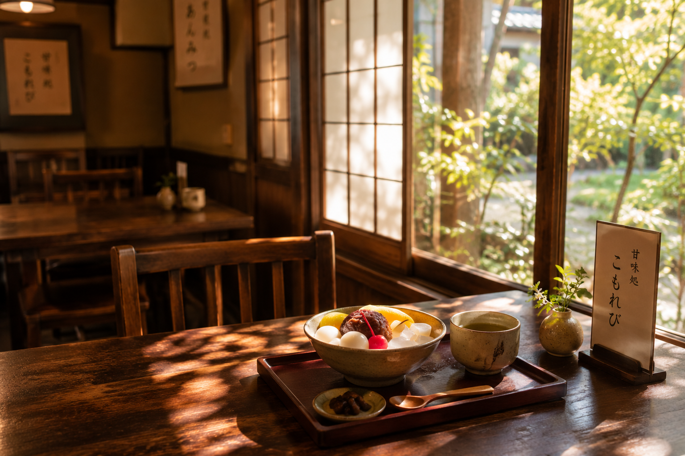
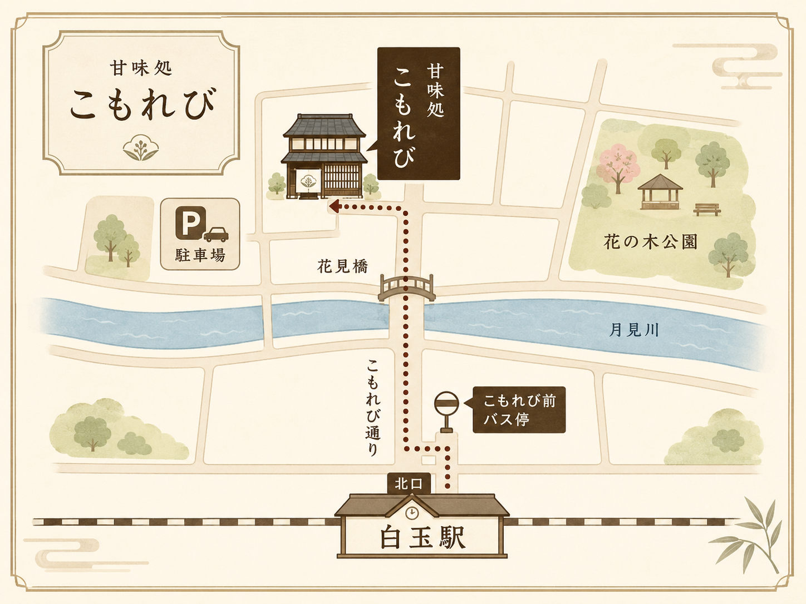
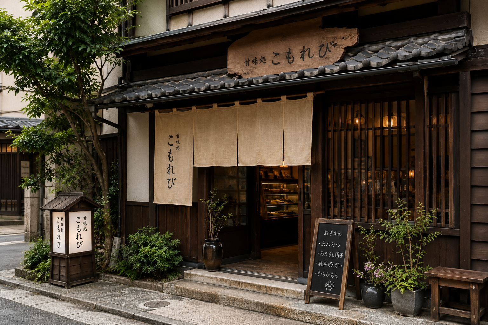

木漏れ日のように、
心ほどけるひとときを。
こもれびについて
甘味処こもれびは、昔ながらの和の甘味と、落ち着いた空間を大切にする甘味処です。
丁寧に手作りしたあんこや団子、四季折々の味わいを楽しめる甘味をご用意しております。
忙しい日々の合間に、ほっとひと息つける場所として、皆さまをお迎えいたします。

こだわり
一
毎朝、丁寧に炊き上げる
手作りあんこ
小豆の風味を大切に、毎朝丁寧に炊き上げています。
二
素朴で、どこか懐かしい
昔ながらの味わい
寒天や白玉、団子など、どこか懐かしい和の甘味をご用意しています。
三
ほっとひと息つける場所
心落ち着く空間
木の温もりとやわらかな光に包まれた、ほっとできる場所です。
店舗情報

- 住所
- 〒000-0000
白玉市こもれび通り3-5-1 - 営業時間
- 10:00～18:00
- 定休日
- 水曜日
- 電話番号
- 000-1234-5678
- アクセス
- 白玉駅 北口より徒歩8分
「こもれび前」バス停より徒歩2分
花見橋を渡ってすぐ - 駐車場
- 店舗横に3台分あり
木の看板と生成色の暖簾を目印にお越しください。
